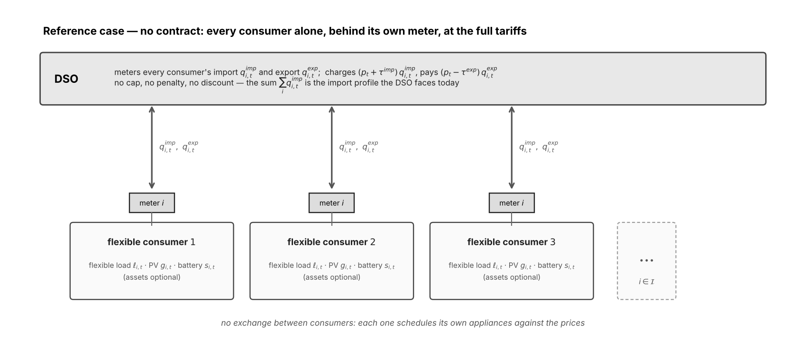
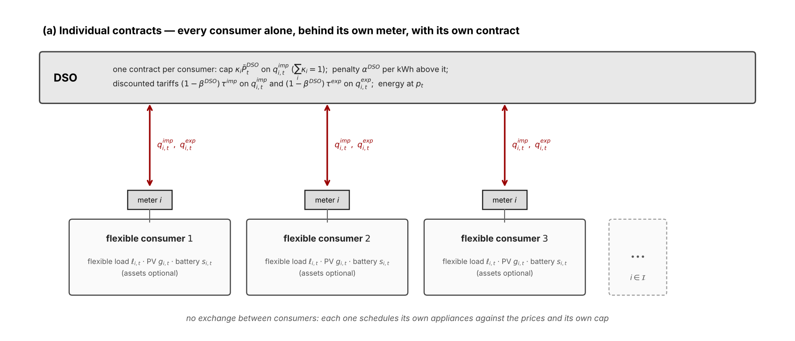
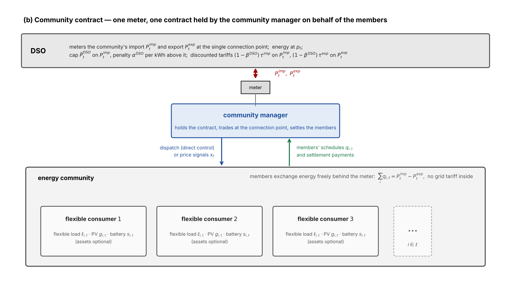
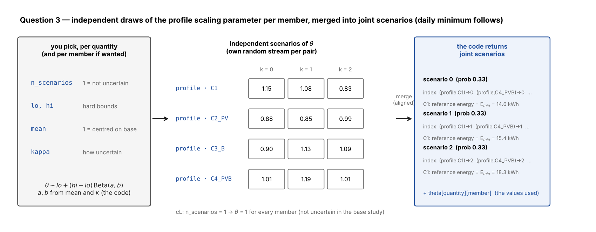

Published: Monday 19 October 2026 · Deadline: Friday 4 December 2026, 23:59 (DTU Learn)
This assignment is carried out in the same groups as Assignment 1 and builds on its models, data and code. Each group hands in one submission in DTU Learn with two parts.
.zip attached to the submission or as a link to the group's repository (accessible to the graders, unchanged after the deadline). The README must let the graders reproduce every number and figure of the report, with one command per experiment. All data used in the experiments is part of this deliverable, including the scenarios generated for Question 3 and any data you add; document it in the README.Practical advice. Keep the Assignment 1 notation and state only what changes. Name model variants with superscripts (\(\mathcal I^{peak}\), \(\mathcal{DP}^{hourly}\), \(\mathcal{SDP}^{CC}\)), so that the reader always knows which model a number comes from.
The assignment has three questions. The group grade is between 0 and 100 points, distributed over the three questions and the four grading criteria of the course as in Table 1.
| Criterion | Question 1 | Question 2 | Question 3 | Total |
|---|---|---|---|---|
| Mathematical models | 8 | 10 | 12 | 30 |
| Writing | 10 | 10 | 10 | 30 |
| Code | 3 | 3 | 4 | 10 |
| Numerical results | 8 | 11 | 11 | 30 |
| Total | 29 | 34 | 37 | 100 |
Table 1: Points per question and criterion.
The criteria and the individual participation adjustment in Grading guidelines and examples (DTU Learn > Assignments) still apply. The grading rubric provided in Grading guidelines and examples describes the standard for each criterion, not a checklist. A criterion is insufficient/not achieved when a deliverable is missing, copied without adaptation or wrong; when results fail their own validation or consistency checks; when metrics are undefined or have no reference; when modelling choices are unmotivated; or when figures and numbers are narrated rather than interpreted. In addition, each question lists what must be delivered.
Some modelling choices are left open. The choices you make are part of the evaluation and graded under Mathematical models, its justification under Writing; be ready to defend both at the oral exam. Which sensitivity analyses you run and which metrics you report is also your choice, unless a question states otherwise (Table 11 lists the dimensions that can be varied, Table 12 examples of metrics). Numerical results rewards the relevance, depth and justification of these choices over their number. An error in a formulation that is implemented faithfully is penalized under Mathematical models, not under Code. A correct analysis that is hard to follow loses points under Writing; a clear analysis that is trivial or based on wrong values loses points under Numerical results.
Final grade. The group grade is adjusted individually from the participation table. The adjusted Assignment 2 grade and the Assignment 1 grade count 50% each. Individual bonus points (weekly exercises, Kahoots, model validation and visualization challenges) are added to this preliminary grade (0–100). The result is converted to the Danish 7-scale and may be adjusted by one level up or down after the oral exam. Group and preliminary grades are not released before the oral exam.
The assignment spans seven weeks. Each lecture unlocks a part of it (Table 2). Questions 1 and 2 are unlocked in Week 7; the two-stage model of Question 3 in Week 8; its scenario studies and its risk-averse and chance-constrained extensions in Weeks 9 to 11. From Week 12 nothing new is unlocked: refine the numerical experiments, the analysis of results, the figures and the insights of all questions.
| Week (date) | Lecture topic | Unlocked in the assignment |
|---|---|---|
| 7 (21/10) | Complementarity modelling & applications | Question 1: \(\mathcal R\), \(\mathcal I\), \(\mathcal C\), duals and settlement. Question 2: the bilevel model \(\mathcal{DP}\), its KKT and strong-duality reformulation, the budget-balance and individual-rationality requirements. |
| 8 (28/10) | Introduction to optimization under uncertainty | Question 3: the risk-neutral two-stage model \(\mathcal{SDP}^{E}\), the baseline, the in-sample / out-of-sample protocol. Scenarios come from the provided module. |
| 9 (04/11) | Multi-stage stochastic optimization, scenario generation | Question 3: the scenario hyper-parameters, the \(N\) and stability studies. |
| 10 (11/11) | Risk-aware optimization | Question 3: risk aversion (CVaR) as a variation; risk metrics on the realized cost (quantiles, CVaR). |
| 11 (18/11) | Stochastic constraints | Question 3: the chance-constrained cap \(\mathcal{SDP}^{CC}\), the \(\varepsilon\) study, the guarantees of the scenario approximation. |
| 12 (25/11) | Visualization & storytelling | Nothing new. Refine experiments, analyses, figures and insights for all questions. |
| 13 (02/12) | Visualization & storytelling (competition) | Report and code finalized; submission Friday 04/12, 23:59. |
Table 2: What each week's lecture unlocks in the assignment.
All questions share the setting below. It is loaded in Question 1 and reused afterwards.
A distribution system operator (DSO) faces congestion on the feeder that serves an aggregation of flexible prosumers. Without contract, as in Assignment 1, every consumer schedules against the day-ahead price alone, imports and exports at the full tariffs, and exchanges nothing with its neighbours. The sum of their imports is the profile the DSO faces today. In some hours it exceeds what the feeder can carry; this exceedance is the congestion to reduce (Figure 1).

Figure 1: Reference case, no contract. Every consumer is behind its own meter; the DSO meters and charges each one.
Rather than reinforcing the feeder, the DSO offers a capacity limitation contract of the kind proposed in [1]: a bilateral agreement that rewards the contract holder for reducing its import in congested hours. The consumers are the flexible consumers of Assignment 1 (section Input data and numerical experiments). They can respond to the offer in three ways, shown in Figures 1–3 with the quantities the DSO meters and charges in each case.
Notation. The notation of Assignment 1 is kept: gross import and export \(q^{imp}_{i,t},q^{exp}_{i,t}\) of consumer \(i\), day-ahead energy price \(p_t\), grid tariffs \(\tau^{imp},\tau^{exp}\). New are the aggregated gross import and export of all consumers at a single connection point, \(P^{imp}_t,P^{exp}_t\ge0\), and the contract parameters below.
The contract between the DSO and the holder has three parameters:
Two contract types are considered (Figures 2 and 3).
(a) Individual contracts. Each consumer signs on its own meter. The cap is split between consumers: consumer \(i\) receives \(\bar P^{DSO}_{i,t}=\kappa_i\,\bar P^{DSO}_t\), with \(\sum_i\kappa_i=1\) and \(\kappa_i\) proportional to its net energy imported over the day without contract (the reference case). Each consumer thus gets the community's cap profile scaled to its share of the aggregated import. It pays the discounted tariffs on its own metered import and export and the penalty on its own exceedance. Other split rules are described in the contract file (Table 11).

Figure 2: (a) Individual contracts. The DSO meters and charges each consumer on its own import and export.
(b) Community contract. The consumers form an energy community: a legal entity, run by a community manager, that trades with the grid through a single connection point and holds one contract for all members. There is one meter, one cap on the community's import \(P^{imp}_t\), and the discounted tariffs apply to the metered exchange \(P^{imp}_t,P^{exp}_t\). Behind the meter, members exchange energy freely. There is no network to model inside the community, only the hourly balance \(\sum_i q_{i,t}=P^{imp}_t-P^{exp}_t\), with \(q_{i,t}=q^{imp}_{i,t}-q^{exp}_{i,t}\) the net consumption of member \(i\). Energy exchanged between members never crosses the meter and pays no grid tariff.

Figure 3: (b) Community contract. The DSO meters and charges the community on its aggregated import and export at the connection point; nothing is charged behind the meter.
Question 1 compares the reference case with contract types (a) and (b). Type (a) against the reference tells whether the contract is worth signing alone. Type (b) against (a) tells what pooling flexibility behind the meter is worth. Type (b) against the reference tells whether the contract is worth signing as a community, for a given member mix.
Under a given contract, the consumers maximize their surplus while providing the capacity limitation service. Under individual contracts (a) - model \( \mathcal I \) - each consumer schedules its flexible loads and assets independently and is charged by the DSO based on its own flows. It pays: the day-ahead energy price for its energy purchased (or sold), the discounted grid tariffs for its imports below their cap and its exports, and the penalty for its imports exceeding the hourly cap. Under a community contract (b), the DSO charges the community manager directly based on the aggregated flows of the community at the connection point. The goal of the manager is to maximize the community's welfare, expressed as the sum of all community members' utilities minus the community manager's costs (payments made to the DSO). The manager must therefore: a) coordinate the dispatch of all the community members to achieve this goal; and b) allocate the community costs among its members and settle all payments made within the community: it decides how much each member pays, or is paid, for its own net consumption. Two distinct setups are considered for these decisions:
Across the questions, the information of the decision-maker and the timing of the decisions change: from perfect information and one day-ahead decision, to uncertain member preferences. Table 3 summarizes the three questions.
| Question | Contract types | Decision-maker (dispatch) | Coordination | When | Information |
|---|---|---|---|---|---|
| Q1 — Is the community worth forming? | (a) individual contracts vs. (b) community contract | (a) individual consumers; (b) community manager | (a) no (independent); (b) yes (direct control) | day-ahead, once | perfect (preferences and PV availability) |
| Q2 — Can price signals achieve what central dispatch does? | (b) community contract | individual consumers | yes (indirect control through price signals) | day-ahead, once | perfect (preferences and PV availability) |
| Q3 — How to steer consumers whose response is uncertain? | as Q2 | as Q2 | as Q2 | as Q2 | imperfect (uncertain member preferences) |
Table 3: Contract types and decision settings of the three questions.
The DSO offers the contract described above in the hope of reducing congestion. Before anything is signed, the prospective community manager wants to know what the contract is worth, and to whom. The community members decide together whether to sign it, individually or as a community, and they all take the same decision. The sixteen consumers have three options: sign nothing and dispatch their appliances independently against energy prices and existing grid tariffs (reference case, model \(\mathcal R\)); sign individually and dispatch their own appliances independently against individual caps (contract (a), model \(\mathcal I\)); sign collectively and let the community manager dispatch their appliances centrally against one shared cap (contract (b) under direct control, model \(\mathcal C\)). In this question the manager has perfect information on preferences, constraints and PV forecast, controls every appliance directly. This case is used as ideal benchmark for Questions 2 and 3.
Investigate: How much flexibility can the DSO extract from the community, and under which contract terms (discount, cap, penalty) is signing a contract worth it for the community (as a whole)? When is signing individual and/or community contracts beneficial for the community as a whole? When the contract benefits the community as a whole, who benefits inside it: does every type of consumer gain under the dual settlement of the central dispatch (c0mpared to not signing or signing individually), and is the manager's budget balanced?
Practical advice. Build \(\mathcal R\), \(\mathcal I\) and \(\mathcal C\) as one parametrized class with switches, not as copies. \(\mathcal{DP}\) and the models of Question 3 share its members, contract and interface, and the variations of Table 11 become named configurations.
How much flexibility the contract extracts: which classes of members shift their loads, in which hours and in which order as the cap tightens, and what the DSO gets from different contract terms (Number of hours kept below the cap, max cap exceedance, overall peak reduction and shift). Why \(\mathcal C\) can never cost the community more than \(\sum_i\mathcal I_i\), why the same does not hold against \(\mathcal R\), and hence why a contract can be worth signing together but not alone, or not at all, and which contract terms (discount, cap) separate these cases. Why the community's overall gain is not always synonymous with every member's gain: which consumer types benefit the most, which ones would be better off signing the contract alone (or not at all) and why their interests diverge from the community's.
Now the community manager cannot control the members' loads directly. Once a day, after the day-ahead prices are published and the DSO has communicated the cap, the manager posts an internal price \(x_t\) for every hour of the next day, the same for every member (model \(\mathcal{DP}\)). The day-ahead price, the discounted grid tariffs and the cap penalty are paid by the manager alone, on the community's metered exchange at the connection point. Each member then schedules its appliances on its own, as in Assignment 1, and the manager knows perfectly every member's preferences and how they react to the posted prices.
The prices are the manager's only instrument, and they should be designed such that they achieve two things: First, to steer individual dispatches towards the optimal of \(\mathcal C\); second, to allocate costs among community members adequately - contrary to the internal prices of \(\mathcal C\) which were shown to sometimes over-collect the congestion rent and leave some members worse off than alone. This is inspired by the mechanism in [1] (should be adapted).
Investigate: When the manager controls only the hourly price that all members face, how much of the value and the flexibility achieved by \( \mathcal C \) can be recovered, and which property of the members explains the answer? Can the same hourly prices also redistribute the benefit of the community and allocate costs among its members adequately, such that they are all "happy" to sign the community contract rather than staying alone? And what does this requirement cost the community as a whole? When one uniform price for everybody cannot achieve all this, which members stand in the way?
Why one price per hour is enough (or not) to reproduce the dispatch of \(\mathcal C\) in the optimistic sense. Why a member's optimal response is a set and not a point when its disutility is linear, and how the manager's anticipated dispatch picks one element of that set. In which hours the price is pinned to the discounted import or export price, and in which the cap or a marginal member sets it (a merit order of flexibility). What the two requirements then do to these prices: with a uniform price for everybody every change moves all schedules at once. Whether both requirements can be met when prices are uniform and under various conditions on the contract terms, which members are blocking when they cannot, and why. An interpretation of who pays for the congestion and who is paid for flexibility when prices serve a single or dual purpose.
Return to the pricing problem \(\mathcal{DP}\) in Question 2. When posting the optimal internal prices, the manager does not know perfectly the preferences of the consumers, and how they will respond to the prices. As a result, the responses the manager anticipates are also uncertain, and so are the community's aggregated imports/exports, cap exceedance, and costs. File preference_uncertainty_params.json defines the uncertainty: each member's reference profile is scaled by one random parameter, and its daily minimum follows (it equals the daily reference energy of the scenario). This uncertainty therefore enters directly each members' constraints and impacts the manager's objective and constraints (individual rationality and budget balance). Each joint scenario combines independent draws for every member (see how src/scenario_generation.py draws and merges them and how you can set the hyper-parameters in Section Input Data and Numerical Experiments). Uncertainty on the members' disutility slope \(c^L\) is available in the same file as a variation (see Table 11). The prices are posted at the same time - for all hours of the following day - before the realization of these uncertain parameters (all realized at the same time), and the members' response depends on these realizations.
Investigate: How should the community manager protect itself against potential violations of important properties of the posted prices (e.g. individual rationality, budget balance) and weigh the risk of incurring high penalties when the members' responses to its prices are uncertain? What do different modelling approaches cost the community manager (against seen and unsee realizations)?
Practical advice. \(\mathcal{SDP}\) carries one KKT system per member and per scenario, plus binaries for the complementarities and the chance constraint. Stay within the scenario sizes of the file, and keep the out-of-sample set small while developing, tuning and validating the models.
How the in-sample costs of the formulations are ordered, and why. How different models protect againsts different types of risks (tail risk of achieving high costs/low profits, probability vs magnitude of constraint violations) and what matters depending on the type of constraints, penalty costs and shape of the uncertain quantities. What the scenario approximation of the chance constraint and/or CVaR guarantees in-sample and does not guarantee out-of-sample, as a function of \(N\) and \(\varepsilon\), and hence why the realized constraint violation frequency/magnitude may differ from the target. What protecting against constraint violations or hedging against tail risks costs and whom it protects. The value of modelling the uncertainty at all, against the deterministic baseline: how it moves with \(N\), with how uncertain the members are (\(\kappa\), bounds) and with the penalty level; what changes when the uncertainty sits in an objective coefficient (\(c^L\)) instead of a constraint parameter (the profile); why linear costs make the realized import jump between scenarios. The tractability of replicating every member's KKT system \(N\) times.
All questions run on the same case: one energy community, one day, one contract, loaded once in Question 1. This section describes what is provided, how the base case is built, how the scenarios of Question 3 are generated, and how sensitivity analyses are built on the base case. The field-by-field description of every file and the code conventions are in the README.md of the starter package.
The starter package (README.md, data/, src/, main.py; Table 7) follows the structure and data conventions of the Assignment 1 repository: one shared appliance catalogue, one case file per community, units in the field names, 24 hourly values per time series. No model code is provided; your Assignment 1 code (model class, scenario helpers, plotting) is the starting point. The restricted Gurobi licence shipped with gurobipy is too small for Questions 2 and 3: activate the free academic licence (Assignment 1 README) before you start.
| File | Content |
|---|---|
data/appliance_params.json |
Appliance catalogue (Assignment 1 format): the four flexible loads FL_L1–FL_L4 (linear disutility 0.25, 0.5, 1.0, 2.0 DKK/kWh; maximum hourly deviation 1 kWh), the PV system PV_01_S (3 kW) and the battery BAT_01_S (2 kWh); day-1 profiles. |
data/bus_params.json |
Connection point, unchanged from Assignment 1: day-1 day-ahead prices, grid tariffs \(\tau^{imp}=0.5\), \(\tau^{exp}=0.4\) DKK/kWh. |
data/weekly_profiles.json |
Seven daily profiles d1–d7: day-ahead prices, PV availability ratio, reference load factor. d1 and d2 are the Assignment 1 days; d1 is the base case. |
data/params_community_base.json |
The base-case community (Assignment 1 case-file format: consumer_id, connection_bus, list_appliances). Only the base community is shipped; variations are built in code (Table 11). |
data/dso_contract_params.json |
Contract: \(\beta^{DSO}\), \(\alpha^{DSO}\), the cap of every day (constant over the hours), cap rule, reference import without contract per day, individual contracts (split rule, shares \(\kappa_i\), individual caps, alternative split rules). |
data/preference_uncertainty_params.json |
Uncertainty rules of Question 3: distributions, merging of the members' draws, scenario sizes. |
src/data_loader.py, main.py |
load_community(community, day) returns the members as Assignment 1 InputData objects plus the contract; python main.py prints the base case. |
src/scenario_generation.py |
Implements the uncertainty file: independent profile scenarios per member, merged into joint scenarios of the community (Question 3). |
Table 7: Files of the starter package.
Every consumer is one Assignment 1 consumer composed from the catalogue: one load model and an asset mix.
The load has the structure of the Assignment 1 load FL_03, with the same parameters for all consumers except the slope of the disutility. The preferred hourly profile is \(\ell^{ref}_{i,t}=L^{\max}\,\rho_t\), where \(\rho_t\in[0,1]\) is the day's reference_load_capacity_factor and \(L^{\max}=3\) kWh/h the connection capacity (16.2 kWh over the day on d1). On top of the characteristics already defined in Assignment 1, we consider that the load may deviate from its reference by at most \(\Delta=1\) kWh in any hour: the hourly bounds are \(\max(0,\ell^{ref}_{i,t}-\Delta)\le\ell_{i,t}\le\min(L^{\max},\ell^{ref}_{i,t}+\Delta)\) (max_hourly_deviation_kWh; the loader returns them as load_lower_kWh and load_upper_kWh). The minimum daily energy equals the daily reference energy, \(E^{\min}=\sum_t\ell^{ref}_{i,t}\) (16.2 kWh on d1); the loader sets it from the profile of the loaded day (min_total_energy_rule). A linear disutility \(c^L_i\sum_t|\ell_{i,t}-\ell^{ref}_{i,t}|\) penalizes deviations from the preferred profile. Four slopes occur, and every consumer has one of them (Table 8). The daily minimum fixes how much a consumer uses over the day, and the slope fixes when: a consumer keeps its reference in an hour as long as the price differs from its internal value of a kWh of daily need (the multiplier of the daily minimum) by less than \(c^L_i\), and otherwise moves the hour's load to a bound. A consumer answers prices and the cap by shifting, not by consuming less; the hourly deviation limit makes the flexibility of a class finite in every hour, so that the stiffer classes are called in the most congested hours only. Every member's problem is a linear program; at a price exactly \(c^L_i\) away from its internal value a consumer is indifferent between several schedules.
| Load | Slope \(c^L\) (DKK/kWh) | Behaviour against the day's price spread (0.85–2.50 DKK/kWh) |
|---|---|---|
FL_L1 |
0.25 | Shifts on the day-ahead prices alone: moving 1 kWh out of an hour costs 0.25 DKK. |
FL_L2 |
0.5 | Shifts on the larger price differences of the day. |
FL_L3 |
1.0 | Shifts only when the cap rent adds to the price difference. |
FL_L4 |
2.0 | Keeps its profile and pays; its congestion is absorbed by the others. |
Table 8: The four loads. Same reference profile (\(L^{\max}\) × the day's reference_load_capacity_factor), same maximum hourly deviation (1 kWh, within 0–3 kWh/h), same daily minimum (the daily reference energy); only the slope of the linear disutility differs.
The assets are a PV system (PV_01_S: \(\overline{PV}=3\) kW with the day's availability profile, 13.5 kWh on d1, marginal cost \(c^{PV}=1.41\) DKK/kWh) and a battery (BAT_01_S: \(\overline S=2\) kWh, \(\overline P^{ch}=\overline P^{dis}=0.75\) kW, \(\eta^{ch}=\eta^{dis}=0.95\), initial state of charge 50%; the end-of-day state of charge is your modelling choice, as in Assignment 1). Each asset is present or absent, which gives four asset classes: no asset, PV, battery, PV and battery.
The community (params_community_base.json, day d1) has sixteen small consumers behind one connection point, one per combination of a slope and an asset class (Table 9): 48 kW of connected load, 24 kW of PV (8 systems), 8 batteries. The consumer IDs carry the slope index and the assets: C3_PV is the FL_L3 load with a PV system and no battery. The eight consumers without PV import their whole daily energy (16.2 kWh on d1) and make the exchange inside the community non-trivial; the low-slope loads and the batteries provide the community's flexibility. The horizon is one day of 24 hours.
| Load (slope) | No asset | PV | Battery | PV and battery |
|---|---|---|---|---|
FL_L1 (0.25) |
C1 |
C1_PV |
C1_B |
C1_PVB |
FL_L2 (0.5) |
C2 |
C2_PV |
C2_B |
C2_PVB |
FL_L3 (1.0) |
C3 |
C3_PV |
C3_B |
C3_PVB |
FL_L4 (2.0) |
C4 |
C4_PV |
C4_B |
C4_PVB |
Table 9: The base-case community: 16 consumers, one per slope and asset class (the loader's archetype, e.g. L3+PV).
Parameters (dso_contract_params.json): discount \(\beta^{DSO}=0.75\), penalty \(\alpha^{DSO}=10\) DKK/kWh, no export cap.
The cap. The cap is constant over the day, like a feeder capacity: \(\bar P^{DSO}_t=f\,E^{R}/24\), where \(E^{R}\) is the aggregated daily import without contract on that day and \(f=1.3\). \(E^{R}\) is given per day in the file, with the peak, the cost and the exceedance without contract, so that you can check your reference model. The cap's daily energy is thus 1.3 times the import without contract: the contract moves the import away from the peak hours; it does not ask the consumers to consume less. The cap of every day is provided (capacity_limits_by_day_kW; capacity_limit_kW is d1, 9.4 kW). To vary the cap's tightness, scale the constant. On d1 the import without contract exceeds the cap in 9 hours, and the cap binds the community in 18 of the 24 hours.
Individual caps (contract (a)). Consumer \(i\) receives \(\bar P^{DSO}_{i,t}=\kappa_i\bar P^{DSO}_t\), with \(\kappa_i\) proportional to its net energy imported over the day without contract (\(\sum_i\kappa_i=1\); about 0.02 for a PV owner, 0.10 for a consumer without PV). The shares and the individual caps of d1 are in the file (individual_contracts), with the shares of every other day. Alternative split rules are described there in words.
Practical advice. Validate before you analyse. The limit cases of Table 12, the equivalence of \(\mathcal{DP}\) with the duals of \(\mathcal C\) in Question 2 and the out-of-sample evaluation of Question 3 are not optional: results that fail them are not results.
The uncertainty file fixes the rules; src/scenario_generation.py implements them and is meant to be used as is (extend it if needed, and report every seed). You pick a few hyper-parameters that set how uncertain each quantity is and how many scenarios to draw. The code draws the scenarios, combines them, and returns them with explicit indices, so that every scenario can be traced back to the draws it is made of. The generated scenarios are part of the code deliverable. The formulas are in the README; this subsection states what you pick and what you get.
Question 3 — uncertain preferences (preference_uncertainty_params.json, Table 10, Figure 4). The reference profile of every member is uncertain through one scaling parameter \(\theta\): \(\rho_t^{\theta}\), one exponent per member for all hours, which keeps the profile in \([0,1]\) without clipping (\(\theta<1\) raises it, \(\theta>1\) lowers it). The daily minimum and the hourly bounds follow deterministically: in every scenario the daily minimum equals the member's daily reference energy, \(L^{\max}\sum_t\rho_t^{\theta}\), and the bounds are \(\ell^{ref}\pm\Delta\) around the scenario's reference. The disutility slope (\(c^L\theta\)) is available as a second quantity for variations; it is not uncertain in the base study (n_scenarios = 1). Draws are independent per member (and per quantity), each on its own random stream, and are merged into joint scenarios of the community: joint scenario \(s\) takes draw \(s\) of every uncertain pair.
| You pick (per quantity, optionally per member) | Meaning | Base value |
|---|---|---|
n_scenarios |
number of independent scenarios of \(\theta\) drawn for the pair; 1 = not uncertain (single scenario \(\theta=1\) for every member) | 5 for the profile; 1 for \(c^L\) |
lo, hi |
hard bounds of \(\theta\), never violated (no clipping) | profile: [0.8, 1.2]; \(c^L\): [0.6, 1.4] |
mean |
centre of the scenarios; 1 = the base case; another value shifts them (e.g. members believed to consume more than declared) | 1 |
kappa |
concentration of the scaled Beta distribution: \(\kappa=2\) with a centred mean is uniform between the bounds; larger \(\kappa\) concentrates the draws around the mean; \(\kappa\to\infty\) is deterministic | 2 (uniform) |
| in-sample sizes, out-of-sample size, seeds | number of joint scenarios the prices are optimized on; the common set they are evaluated on | 5 and 10; 100 out of sample; seeds reported |
Table 10: Question 3 scenario generation: hyper-parameters, meaning and base values.
The code returns (draw_preference_scenarios, or step by step rules_to_spec → set_rule → draw_scaling_scenarios → merge_scenarios): the independent scenarios of \(\theta\) per member; a list of joint scenarios, each with its probability, the index of the draw taken for every member, the \(\theta\) values used, and every member's appliance parameters as the scenario sees them (profile and daily minimum), ready to be loaded into your member model. expected_preference_scenario is the deterministic baseline (\(\theta=1\) everywhere, the mean of every distribution in the base study).

Figure 4: Question 3. Independent draws of the profile scaling parameter per member (three draws each), merged into joint scenarios that record the draw taken for every member; the daily minimum follows the profile.
Every analysis is a variation of the base case. A variation is built in code from the loaded objects; the data files are never edited, so that every base-case result is on the data as provided and comparable across groups. Table 11 lists the dimensions along which the base case can be varied, what to change in the code, what it changes, and the rules that keep a variation consistent. Unless a question asks for a specific study, you choose the dimensions relevant to your argument and justify the choice. Every variation of the data and the contract is feasible for the community under direct control; feasibility under the requirements of Questions 2 and 3 is part of what those questions ask.
Choosing the values. Pick the range so that both regimes appear: the cap binding and slack, a requirement feasible and infeasible, the contract worth signing and not. Pick the granularity so that the trend and its breaking point are visible: a coarse sweep first, then refine around the value where the behaviour changes. Present only the values that carry the argument.
Practical advice. State a hypothesis and formulate the expected insights before running each analysis: which dimension, over which range, should produce which effect, visible in which metric, and the cause. An effect that does not appear, or appears with the wrong sign, is a result too. Change one dimension at a time, unless the interaction is the point (two dimensions read as a map, or two model variations compared on the same data). Not every experiment you run belongs in the report: keep the studies that test a hypothesis and change a conclusion, drop those that only confirm the base case or repeat another study's message.
| Dimension | What you can tune in the code | What it changes | Rules |
|---|---|---|---|
| a) Member mix | After load_community("base"), edit com.members: drop or duplicate InputData objects (new consumer_id for a copy); change the load slope linear_disutility (0.25 to 2.0); remove a PV system (pv_max_kW = 0, pv_available zero) or a battery (battery_* = None), or add them with the catalogue values. Alternatively, write your own params_community_<name>.json in the Assignment 1 format and load it by name. |
The community's flexibility, its reference import \(E^R\) and congestion, the exchange behind the meter; the number of members sets the model size. | One connection point. Recompute \(E^R\), the cap (\(f\times E^R\), same profile shape) and the shares \(\kappa_i\) from your own \(\mathcal R\) for the new mix (the loader's capacity-rule shares are a placeholder). Name the mix and state what changed. Not required by any question. |
| b) Daily conditions | load_community("base", day="d3"), d1–d7. |
Prices, PV availability, reference profiles and daily minimum, and the cap of that day, all together. | Never combine the prices of one day with the PV or the cap of another. d1 and d2 are the Assignment 1 days. |
| c) Contract | com.contract.tariff_discount_ratio (\(\beta^{DSO}\)), .penalty_DKK_per_kWh (\(\alpha^{DSO}\)), .export_capacity_limit_kW. Cap tightness: multiply .capacity_limit_kW by \(f'/1.3\); a time-varying cap profile is a variation of your own (e.g. the inverse-price shape of [1]). Split rule of (a): recompute .share from your \(\mathcal R\) with another rule of the contract file (peak, gross energy, hourly, capacity) and .individual_capacity_limit_kW \(=\kappa_i\times\) cap. |
The value of the contract to each side; which hours bind and how high the rent rises; the benchmark \(\mathcal I\), hence individual rationality. | \(\sum_i\kappa_i=1\). Compare \(\mathcal I\) and \(\mathcal C\) under the same contract. Name the benchmark by its split rule (\(\mathcal I^{peak}\)). |
| d) Members' parameters | On each InputData: linear_disutility (one factor for all members keeps the ordering of the slopes); max_hourly_deviation_kWh (recompute load_lower_kWh / load_upper_kWh); min_daily_energy_kWh as a ratio of reference_load.sum(); pv_max_kW (rescale pv_available); battery_capacity_kWh (scale the charge and discharge power with it). |
How much flexibility the community has, and what fixes the daily energy. | Keep reference_load \(\le\) load_max_kWh and the bounds consistent with the deviation limit. A daily minimum above the reference energy forces consumption beyond the preferred profile: say so if intended. Change the same parameter for all members, unless heterogeneity is the point. |
| e) Model variations | Switches of your model class: battery end-of-day; cap as hard constraint or penalty. Question 2: objective, requirements (none, budget balance, both), hard or soft, price bound and regularization. Question 3: cap in expectation, chance constraint (\(\varepsilon\)) or every scenario; requirements per scenario or in expectation; risk measure. | The problem class and its solution, not the data. | One switch at a time, on the same data. Name the variant with a superscript. |
| f) Uncertainty, Question 3 | set_rule(spec, quantity, consumer_id, n_scenarios, lo, hi, mean, kappa) for "profile" (the base study) or "cL" (uncertain disutility slope instead, or as well); in-sample \(N\), out-of-sample size, seeds. |
Which members and which quantity are uncertain, how much, and how many scenarios the prices are optimized on. | Same out-of-sample set and common random numbers across the models compared. Seeds reported. |
Table 11: Variations of the base case: what to change, what it changes, and the rules that keep a variation consistent.
Table 12 lists metrics and types of analysis relevant to the questions. They are examples, not an exhaustive list, and not all expected in one report. Define every metric you use precisely (units, reference situation, sign convention) and keep the definition in every question. Which ones you report is your choice, unless a question states a minimum. Choose the few that carry your argument, show them in figures that relate cause and effect (a metric against the parameter swept; two metrics against each other as a trade-off frontier), and leave the rest to the appendix or the repository.
| Family | Metrics and analyses |
|---|---|
| Value and cost | Total community cost (or welfare) and its components: energy at the day-ahead price, tariffs, penalty, members' utility and disutility; expected value, quantiles and CVaR under uncertainty; value against the no-contract and individual-contract situations (what the contract costs, what pooling is worth); value of the stochastic solution; expected value of perfect information (EVPI). |
| Who gains | Individual benefit against the benchmark (absolute; as a share of the benchmark cost; relative to the member's contribution to the effort); individual rationality against the no-contract and individual-contract situations; the manager's budget (payments collected minus costs incurred) and its composition (congestion rent, tariffs); fairness of the distribution (dispersion of benefits, proportional cost reduction, benefit per kWh of flexibility provided). |
| Flexibility for the DSO | Import removed from the capped hours and energy shifted across hours; residual cap exceedance and penalty paid; peak import; cost of the flexibility to the community per kWh removed (in total, and counting only the kWh above the cap); the contracts (discount × cap) under which both sides gain. |
| Dispatch and behaviour | Per member and in aggregate: energy shifted (deviation from the reference profile, by hour and over the day), hours at the bounds, when the daily minimum is filled; battery throughput and cycles, charging in the capped hours; PV self-consumed, exchanged inside the community, exported or curtailed; energy exchanged behind the meter against energy imported through it; import and export profiles at the connection point against the cap. |
| Thresholds and marginal values | Shadow prices: the cap multiplier (value of one more kW of cap in an hour), the multipliers of the daily minimum and of the battery limits; break-even values found by sweeping (the discount at which the contract pays, the cap energy at which the requirements of Q2 become feasible, the flexibility at which individual contracts beat the community); slope of the cost against the parameter around the base case. |
| Prices and signals | Internal prices, cap multipliers and effective marginal prices of the members (Q1); posted prices, their volatility across hours and their relation to the internal prices (Q2); in which hours the price is pinned to the discounted import or export price and in which the cap sets it, and why. |
| Validation | Limit cases: the community under direct control with no cap, no discount and tariffs on each member's own flows reproduces the no-contract situation; with every quantity at one scenario the stochastic models reproduce the deterministic one. Scenario checks: the drawn \(\theta\) stay inside their bounds and average to the set mean; every scenario's daily minimum equals its reference energy; the indices recover the draws. The equivalence of \(\mathcal{DP}\) with the duals of \(\mathcal C\) (Q2) and the member-hours where members are indifferent; complementarity and strong-duality residuals; magnitude and frequency of constraint violations in and out of sample. |
| Under uncertainty | In-sample objective against out-of-sample realized cost (optimism gap); frequency and magnitude of cap exceedance against the target \(\varepsilon\); in-sample vs out-of-sample stability as the number of scenarios grows; distribution of the realized cost (quantiles, CVaR, worst path), not only its mean; value of the stochastic solution, EVPI; how the results move with the scenario hyper-parameters (\(\kappa\) and bounds); which draws drive the tail of the realized cost (trace the worst scenarios back to their indices: a member whose profile is higher than declared). |
| Computation | Problem class and size (variables, binaries, constraints, as functions of members and joint scenarios); solution time and optimality gap; solution time against the saving more scenarios buy. |
Table 12: Suggested metrics and analyses. Define what you use; report what carries the argument.
A figure or a table is an argument, not a record of output. Each one answers one question of the form "what happens to Y when X changes, and why". Its design follows from that question: what is on the axes, what is compared, where the eye should land first. A value out of context (a cost of 718 DKK, a price of 2.3 DKK/kWh) is not an insight. A value against a reference (the no-contract situation, the individual contracts, the central dispatch, the day-ahead price, the cap) and along a parameter (discount, cap tightness, number of scenarios) is. Table 12 gives the Y, Table 11 the X; the reference turns both into a trend. Table 13 lists the types of figures and tables that fit this assignment.
| Type | Use it when | Typical use here |
|---|---|---|
| Line plot over time (hours) | The shape of a daily profile is the point: when something happens, how two profiles differ hour by hour. Plot the reference profile on the same axes (dashed or grey), so that the deviation is read directly; shade the hours where a constraint binds. | Aggregated import against the cap, with and without contract; internal price against the day-ahead price and the discounted import/export prices; a member's load against its reference; state of charge over the day. |
| Line plot over a parameter | A sweep: one metric against the parameter varied, one line per model or variant. The crossings and kinks are the result (where a contract starts to pay, where a requirement becomes infeasible, where the cap stops binding): mark them. Prefer two panels sharing the x-axis to two y-axes. | Community cost and DSO exceedance against the discount or the cap energy, for \(\mathcal R\), \(\mathcal I\), \(\mathcal C\); in-sample vs out-of-sample cost against the number of scenarios. |
| Grouped or stacked bars | A comparison across a few categories (members, models, days) of a quantity that decomposes: stacked when the parts sum to a meaningful total (cost = energy + tariffs + penalty + disutility), grouped when the categories are compared on the same scale. Order the categories by a meaningful key (archetype, size of the gain), not alphabetically. More than ~8 categories or ~4 parts calls for another chart. | Benefit per member against \(\mathcal I\) and against \(\mathcal R\), grouped by archetype; decomposition of the community's cost under each model; cost of each requirement of Question 2 (cap only → budget balance → both). |
| Heat map | Two dimensions at once, and the pattern matters more than individual values: a quantity indexed by (member, hour), or a metric over a grid of two parameters. Use a diverging colour scale centred on the reference when the sign matters (deviation from the reference profile, price minus day-ahead price), a sequential one otherwise. Annotate the cells only if there are few. | Shifted energy per member and hour; price differences per member and hour (Question 2 or its variants); the community's gain, or the feasibility of the requirements, over a grid of discount × cap energy. |
| Distribution plots (histogram, box plot, empirical CDF) | The variability is the point, not the mean: outcomes over scenarios or out-of-sample paths. Put the compared policies on the same axes, with common random numbers, so that the shift of the whole distribution is visible. Mark the mean, a quantile and the CVaR if the argument uses them. | Realized cost of the deterministic baseline and of the stochastic models on the out-of-sample set; cap exceedance across scenarios against the target \(\varepsilon\); in-sample vs out-of-sample cost. |
| Trade-off frontier (scatter or curve) | Two metrics pull in opposite directions and the question is the exchange rate between them: one point per model or per parameter value, the parameter annotated along the curve. The slope of the frontier is the insight. | Community cost against cap exceedance as \(\varepsilon\) or \(\alpha^{DSO}\) varies; community cost against the equality of the distribution; computation time against the saving more scenarios buy. |
| Table | Exact values matter, or there are few numbers and several dimensions to show at once (models × metrics on the base case). Order rows and columns so that the comparison made in the text is read along a row or down a column; typeset the key cells in bold; give units in the header, a reference column, and differences or ratios rather than only levels. A table of twenty runs with six decimals carries no insight. | Base-case summary of \(\mathcal R\), \(\mathcal I\), \(\mathcal C\) (cost, exceedance, peak, rent, members worse off); decomposition of a requirement's cost; problem size and solution time per model. |
Table 13: Types of figures and tables, when to use them, and what they can show here.
Practical advice. A figure belongs in the main text if, and only if, an argument needs it. Three rules: (1) What shares the axes is a claim. Put together what the argument contrasts (the same metric under two models, the same model before and after a requirement, the same community on two days) and nothing else; a line that is not part of the comparison is noise. (2) Show the trend, then the detail. Lead with the effect along the parameter or against the reference; the hourly profile that explains why comes second, for the one case that illustrates the mechanism. (3) Make the figure answer its question without the text. Title or caption states the question and the answer ("the community gains below a discount of 0.4; the individual contracts never do"); axes carry units; the reference line is labelled; colours and line styles are the same for the same model in every figure; the legend uses the superscripts of your nomenclature. If an insight seems to need many figures, either redesign them so that one shows exactly what the insight says, or split the insight into several, each with its own figure. If a reader cannot say what a figure shows in one sentence, it is either two figures or no figure.